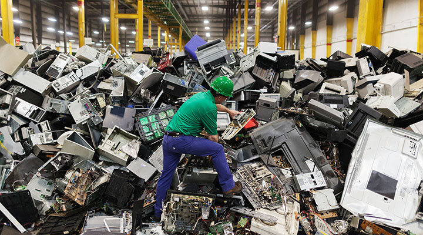

Para descartar o lixo eletrônico é necessário saber locais de coleta para o mesmo, é importante saber que geralmente estão localizados em regiões com
grande movimento de pessoas, como em supermercados, shoppings, farmácias e entre outros. Outro fator importante é
sempre se atentar no que está sendo descartado, tendo locais onde são feitas a coleta de pilhas e baterias ou em locais de coleta de eletroeletrônicos,
também podem ser descartados na própria empresa fabricante ou em operadoras que façam o serviço como TIM, VIVO, CLARO e OI.

Para saber qual o local mais próximo de você para realizar o descarte de eletroeletrônicos e pilhas, basta seguir os passos a seguir:
1. Acessar o site greeneletron
2. Inserir o seu endereço.
3. Selecionar a área de cobertura.
4. Clicar em "Veja a lista de todos os PEVs em sua cidade".
5. Pronto, ele abrirá o mapa e basta selecionar a PEV que desejar e se atentar aos dias e horários de funcionamentos,
além do tamanho do coletor.